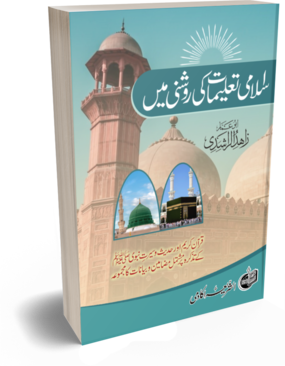
اسلامی تعلیمات کی روشنی میں
Download
2738 pages — 17 mb
اسلامی تعلیمات کی روشنی میں
(قرآن کریم اور حدیث و سیرتِ نبوی ﷺ کے تذکرہ پر مشتمل مضامین و بیانات کا مجموعہ)
Download2738 pages — 17 mb
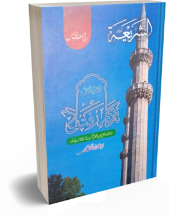
تذکارِ رفتگاں
Download
792 pages — 9 mb
تذکارِ رفتگاں
(اساتذہ و اکابر، قومی و بین الاقوامی شخصیات، اور رفقاء و احباب کا تذکرہ)
Download792 pages — 9 mb
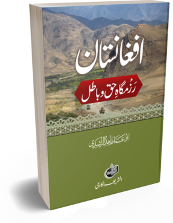
785 pages — 7 mb
افغانستان — رزمگاہِ حق و باطل
Download785 pages — 7 mb
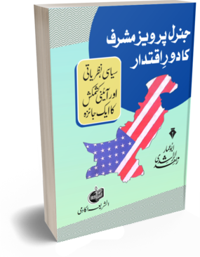
591 pages — 7 mb
جنرل پرویز مشرف کا دورِ اقتدار — سیاسی، نظریاتی اور آئینی کشمکش کا ایک جائزہ
Download591 pages — 7 mb
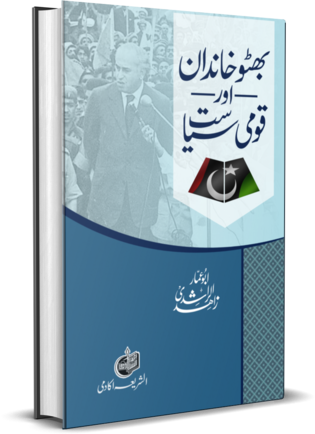
بھٹو خاندان اور قومی سیاست
Download
535 pages — 4 mb
بھٹو خاندان اور قومی سیاست
(ذوالفقار علی بھٹو، بے نظیر بھٹو، بلاول بھٹو اور آصف علی زرداری کے ادوارِ سیاست کا جائزہ)
Download535 pages — 4 mb
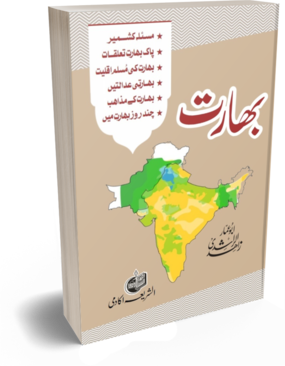
بھارت
Download
479 pages — 6 mb
بھارت
(مسئلہ کشمیر، پاک بھارت تعلقات، بھارت کی مسلم اقلیت، بھارتی عدالتیں، بھارت کے مذاہب، بھارت کے اسفار)
Download479 pages — 6 mb
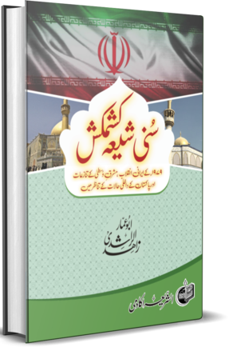
سنی شیعہ کشمکش
Download
454 pages — 5 mb
سنی شیعہ کشمکش
(۱۹۷۹ء کے ایرانی انقلاب، مشرقِ وسطیٰ کے تنازعات، اور پاکستان کے داخلی حالات کے تناظر میں)
Download454 pages — 5 mb
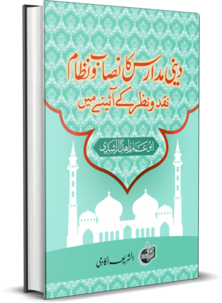
393 pages — 6 mb
دینی مدارس کا نصاب و نظام — نقد و نظر کے آئینے میں
Download393 pages — 6 mb
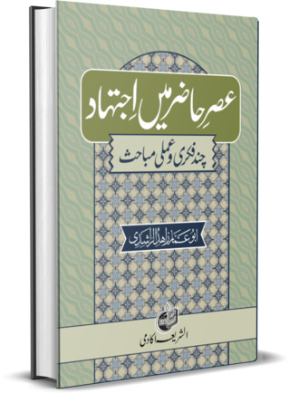
345 pages — 5 mb
عصرِ حاضر میں اجتہاد — چند فکری و عملی مباحث
Download345 pages — 5 mb
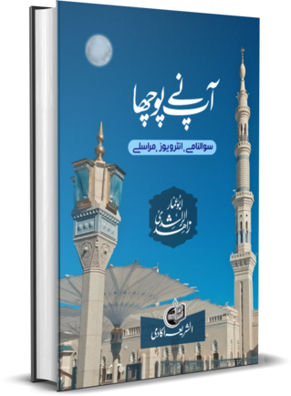
آپ نے پوچھا
Download
343 pages — 5 mb
آپ نے پوچھا
(سوالنامے،انٹرویوز،مراسلے)
Download343 pages — 5 mb
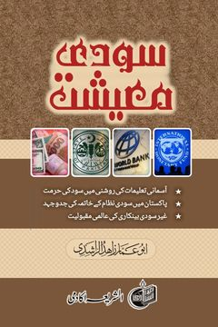
254 pages — 4 mb
سودی معیشت
Download254 pages — 4 mb
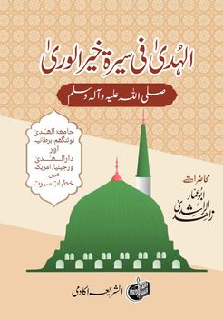
236 pages — 5 mb
الہدیٰ فی سیرۃ خیر الوریٰ
Download236 pages — 5 mb
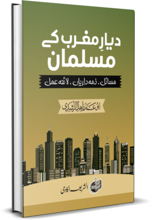
231 pages — 4 mb
دیارِ مغرب کے مسلمان: مسائل، ذمہ داریاں، لائحہ عمل
Download231 pages — 4 mb
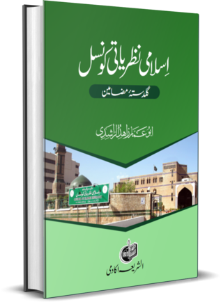
225 pages — 2 mb
اسلامی نظریاتی کونسل : دائرہ کار، سفارشات اور توقعات
Download225 pages — 2 mb
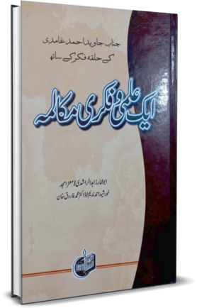
208 pages — 3 mb
جناب جاوید احمد غامدی کے حلقۂ فکر کے ساتھ ایک علمی و فکری مکالمہ
Download208 pages — 3 mb
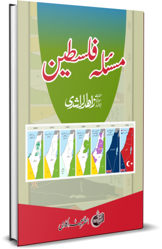
199 pages — 3 mb
مسئلہ فلسطین
Download199 pages — 3 mb
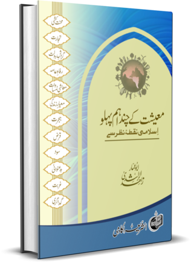
معیشت کے چند اہم پہلو
Download
196 pages — 2 mb
معیشت کے چند اہم پہلو
اسلامی نقطۂ نظر سے
Download196 pages — 2 mb
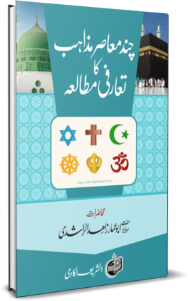
167 pages — 4 mb
چند معاصر مذاہب کا تعارفی مطالعہ
Download167 pages — 4 mb
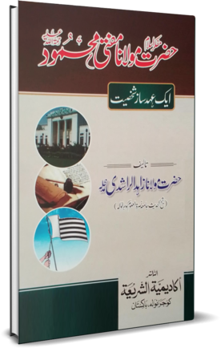
159 pages — 10 mb
مفکرِ اسلام مولانا مفتی محمودؒ — ایک عہد ساز شخصیت
Download159 pages — 10 mb
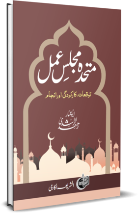
150 pages — 3 mb
متحدہ مجلسِ عمل — توقعات، کارکردگی اور انجام
Download150 pages — 3 mb
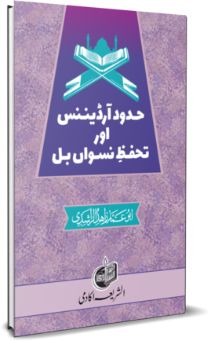
152 pages — 3 mb
حدود آرڈیننس اور تحفظِ نسواں بل
Download152 pages — 3 mb
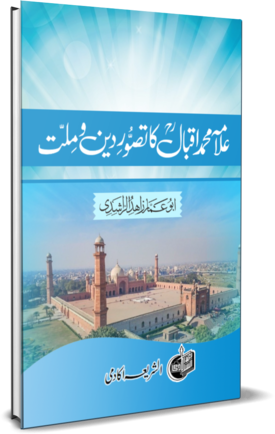
176 pages — 3 mb
علامہ محمد اقبالؒ کا تصورِ دین و ملت
Download176 pages — 3 mb
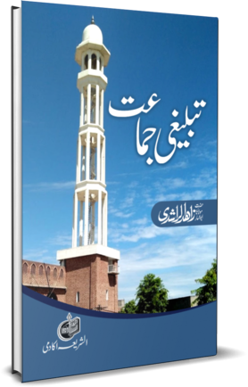
140 pages — 2 mb
تبلیغی جماعت
Download140 pages — 2 mb
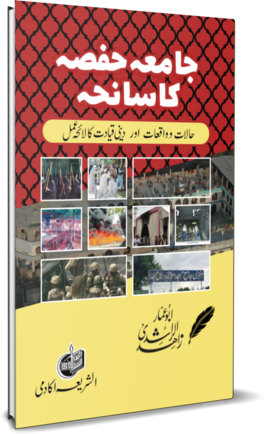
130 pages — 3 mb
جامعہ حفصہ کا سانحہ — حالات و واقعات اور دینی قیادت کا لائحہ عمل
Download130 pages — 3 mb
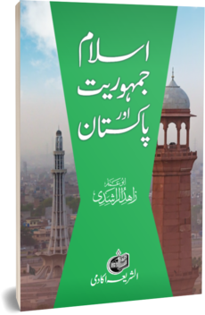
129 pages — 3 mb
اسلام، جمہوریت اور پاکستان
Download129 pages — 3 mb
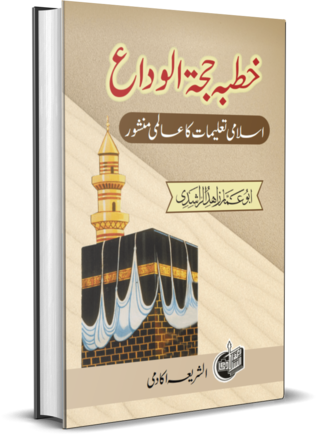
128 pages — 3 mb
خطبہ حجۃ الوداع — اسلامی تعلیمات کا عالمی منشور
Download128 pages — 3 mb
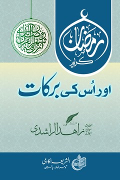
125 pages — 3 mb
رمضان کریم اور اس کی برکات
Download125 pages — 3 mb
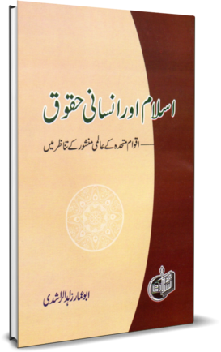
119 pages — 8 mb
اسلام اور انسانی حقوق — اقوامِ متحدہ کے عالمی منشور کے تناظر میں
Download119 pages — 8 mb
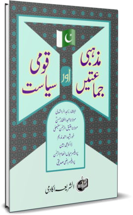
101 pages — 3 mb
مذہبی جماعتیں اور قومی سیاست
Download101 pages — 3 mb
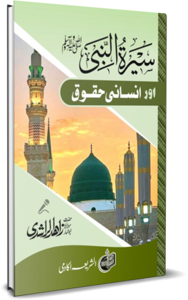
96 pages — 3 mb
سیرتِ نبوی ﷺ اور انسانی حقوق
Download96 pages — 3 mb
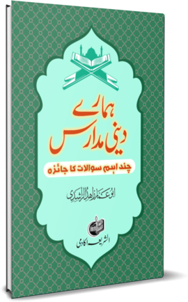
88 pages — 2 mb
ہمارے دینی مدارس — چند اہم سوالات کا جائزہ
Download88 pages — 2 mb
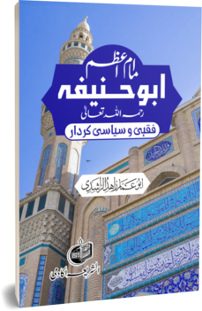
73 pages — 4 mb
امامِ اعظم ابو حنیفہؒ — فقہی و سیاسی کردار
Download73 pages — 4 mb
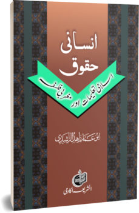
67 pages — 3 mb
انسانی حقوق — اسلامی تعلیمات اور مغربی فلسفہ
Download67 pages — 3 mb
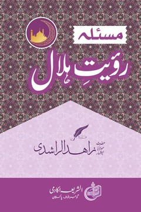
67 pages — 2 mb
مسئلہ رؤیتِ ہلال
Download67 pages — 2 mb
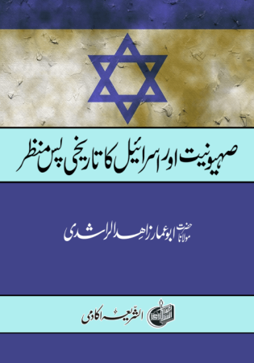
40 pages — 8 mb
صہیونیت اور اسرائیل کا تاریخی پس منظر
Download40 pages — 8 mb
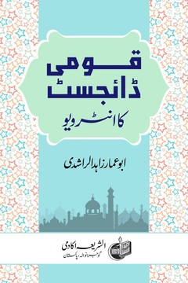
46 pages — 2 mb
قومی ڈائجسٹ کا انٹرویو
Download46 pages — 2 mb
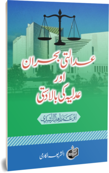
45 pages — 2 mb
عدالتی بحران اور عدلیہ کی بالادستی
Download45 pages — 2 mb
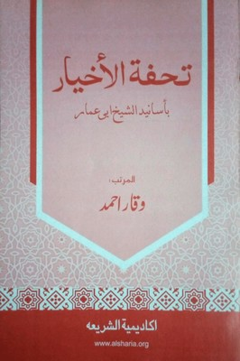
34 pages — 6 mb
تحفۃ الاخیار باسانید الشیخ ابی عمار
Download34 pages — 6 mb
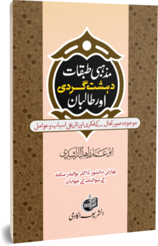
34 pages — 2 mb
مذہبی طبقات، دہشت گردی اور طالبان
Download34 pages — 2 mb
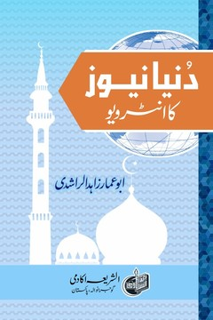
23 pages — 2 mb
دنیا نیوز کا انٹرویو
Download23 pages — 2 mb
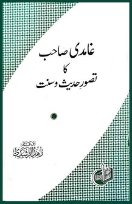
22 pages — 2 mb
غامدی صاحب کا تصورِ حدیث و سنت
Download22 pages — 2 mb
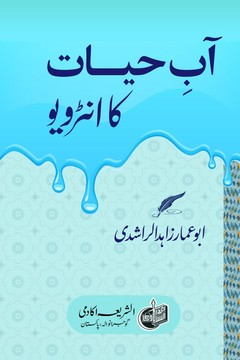
20 pages — 2 mb
آبِ حیات کا انٹرویو
Download20 pages — 2 mb
اذان ٹی وی کا سوالنامہ
Download20 pages — 2 mb
مائیکل اسکاٹ سے چند باتیں
Download14 pages — 2 mb